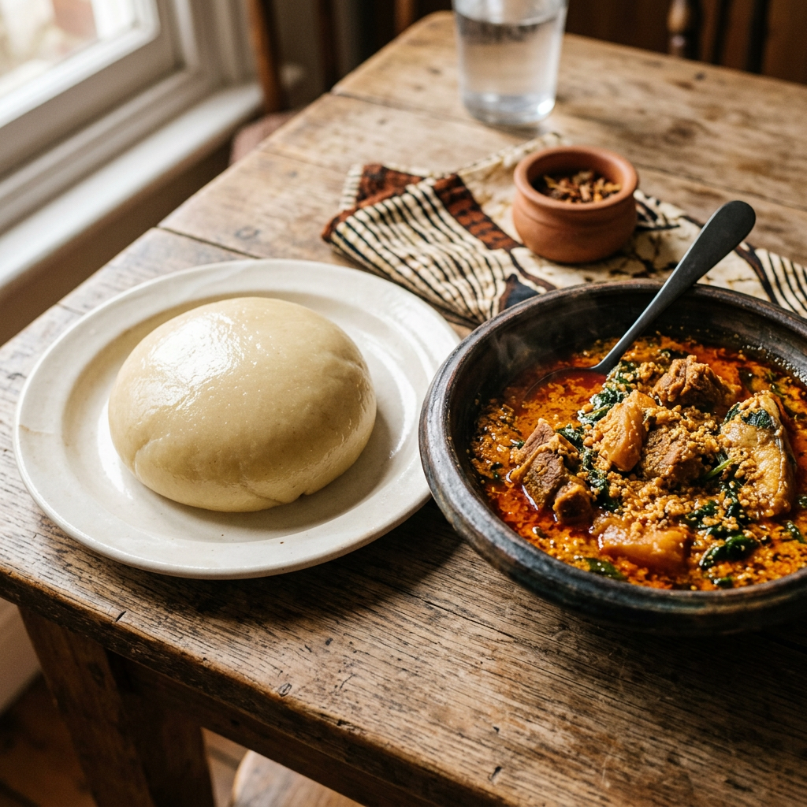

Smooth Fufu

Description
Fufu is a soft, stretchy West African staple often served with soups and stews. This version uses cassava or
plantain fufu flour for a simpler home method with a smooth, dough-like texture.
Ingredients
- 115 g to 2 cups cassava flour or plantain fufu flour, depending on batch size
- 250 ml to 2 cups warm water, added gradually
Steps
- Place the fufu flour in a saucepan or bowl and mix in part of the water to form a smooth paste with no
lumps.
- Set the pan over low to medium heat and slowly add the remaining water while stirring continuously.
- Add the tomatoes, tomato paste, salt, pepper, and herbs, then simmer the sauce until slightly thickened.
- Keep stirring vigorously as the mixture thickens into a smooth, stretchy dough.
- Add a small splash of water if needed, cover, and let it cook for about 5 minutes on low to medium heat.
- Stir again until the texture is elastic, smooth, and uniform.
- Shape into balls with a wet spoon or by hand once cool enough, then serve warm with soup or stew.
Home